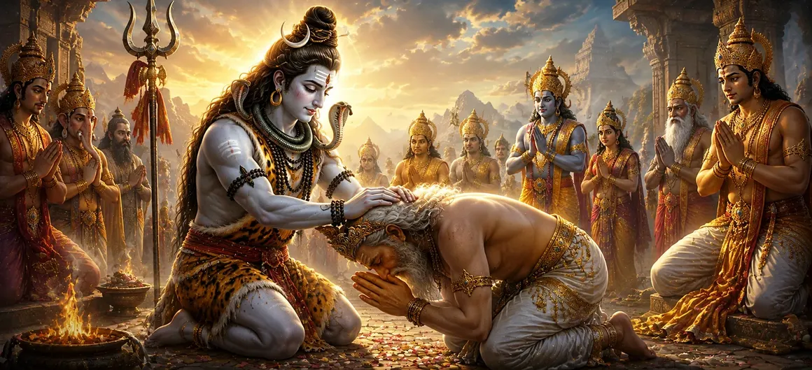

This chapter reveals the boundless compassion of Lord Shiva after the destruction of Dakṣa’s sacrifice. Although Dakṣa's pride and disrespect had led to great suffering and chaos, Shiva did not remain consumed by anger. Instead, He demonstrated divine mercy by restoring Dakṣa and bringing peace to all who had been affected by the tragic events. The chapter highlights forgiveness, repentance, and the transformative power of divine grace.
After witnessing the devastation caused by the conflict, the gods and sages approached Lord Shiva with humility. They prayed for reconciliation and requested that He show mercy toward Dakṣa and the participants of the sacrifice.
The suffering that followed his actions led Dakṣa to recognize the consequences of his pride. Realizing his mistakes, he became humble and sincerely regretted his disrespect toward Lord Shiva. His repentance opened the way for divine forgiveness.
Rather than seeking vengeance, Lord Shiva chose compassion. He understood Dakṣa’s transformation of heart and responded with kindness. This act demonstrated that divine justice is always balanced by mercy and wisdom.
Through His divine power, Lord Shiva restored Dakṣa and relieved his suffering. Harmony gradually returned among the gods and sages, and the wounds created by pride and conflict began to heal. This restoration symbolized the possibility of redemption through sincere repentance.
Sincere repentance opens the door to forgiveness and growth.
The Lord’s compassion extends even to those who have erred.
Forgiveness restores harmony and heals the effects of conflict.
Dakṣa’s experience became a lasting reminder that pride leads to suffering, while humility leads to wisdom and peace. The chapter encourages devotees to remain respectful, compassionate, and open to self-correction.
One of the most powerful messages of the chapter is that grace is greater than anger. Lord Shiva’s willingness to forgive transformed a scene of destruction into an opportunity for renewal, reconciliation, and spiritual growth.
This chapter teaches that no mistake is beyond redemption when accompanied by sincere repentance and humility. Lord Shiva’s compassion reminds devotees that divine grace has the power to heal suffering, restore harmony, and guide the soul toward a higher path.
Lord Shiva's forgiveness brought healing not only to Dakṣa but also to everyone affected by the conflict. The chapter demonstrates that resentment and hostility prolong suffering, while forgiveness creates opportunities for reconciliation and peace. By showing mercy, Shiva transformed a moment of devastation into a lesson of spiritual renewal.
With Dakṣa restored and divine forgiveness granted, harmony returned to the celestial realms. The gods rejoiced as balance was reestablished and the disturbances caused by pride and conflict came to an end. This restoration symbolized the Divine's ability to transform disorder into peace and guide all beings back toward righteousness.
"Where repentance is sincere, divine grace flows without limit."
Continue exploring the sacred events of Sati Khanda as Lord Shiva's compassion removes Dakṣa’s suffering and restores harmony. In the next chapter, witness the completion and restoration of Dakṣa’s sacrifice as divine grace brings reconciliation and fulfillment.